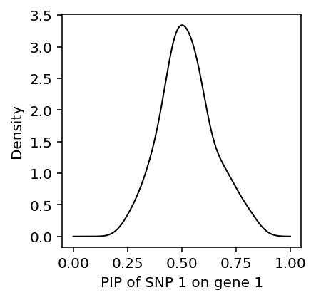
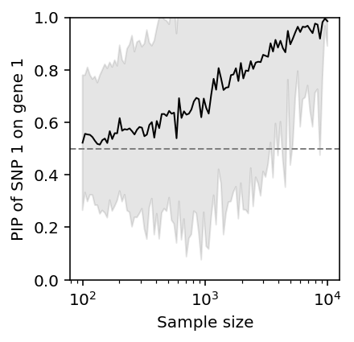

Multivariate fine mapping to identify target genes
Table of Contents
Introduction
One of the key challenges in interpreting non-coding variation is linking regulatory variants to their target genes. One natural approach to solve this problem is QTL mapping: directly associating genetic variation with gene expression levels. QTL studies have revealed that genetic variants associated with expression of a gene cluster near the transcription start site of that gene (Veyrieras et al. 2008, Dimas et al. 2009, Stranger et al. 2012). Large scale efforts such as the Gene Tissue Expression Project (GTEx) have systematically profiled gene expression across cell types, and sought to use the insights from QTL mapping to make progress on interrogating the genetic basis of disease (GTEx consortium 2017).
However, recent efforts to experimentally fine map GWAS loci have shown that causal non-coding variants can be more than 1 megabase from their target gene, and may not even target the closest gene (Musunru et al 2010, Claussnitzer et al. 2015, Wang et al 2016). Further, enhancer-gene interactions have been shown to be limited by topologically associated domain boundaries, rather than genomic distance (Lupiáñes et al. 2015). These handful of examples are supported by systematic profiling of chromatin interactions (Zhang et al. 2013) and high throughput perturbation assays (Fulco et al. 2016).
Here, we develop a new method to fine map QTLs which does not assume that SNPs target the nearest gene, or are within 1 MB of their target gene. The key idea of our approach is to develop a novel multivariate fine mapping approach under the prior assumption that any single SNP can have a non-zero effect on at most one phenotype.
Methods
Two step fine-mapping approach
Suppose we assume a generative model with exactly one causal variant, denoted single effect regression (SER):
\[ \mathbf{y} = \mathbf{X b} + \mathbf{e} \]
\[ b = \mathbf{z} \beta \]
\[ \mathbf{z} \sim \mathrm{Mult}(1, \mathbf{\pi}) \]
Then, posterior computations are easy:
\[ \mathbf{z} \mid \mathbf{X}, \mathbf{y} \sim \mathrm{Mult}(1, \mathbf{\alpha}) \]
\[ \alpha_j = \frac{\pi_j BF_j}{\sum_k \pi_k BF_k} \]
To allow more than one causal variant, a typical approach is to change the prior, factorizing \(\gamma_1, \ldots, \gamma_p\). In susie, we take a different approach:
\[ \mathbf{y} = \sum_l \mathbf{X} \mathbf{b}_l + \mathbf{e} \]
\[ b = \mathbf{z}_l \beta_l \]
In this approach, \(\mathbf{z_l}\) does not factorize, and the posterior distribution reflects dependencies between the different variables.
This model can be efficiently fit using variational inference, for which the updates outline a Bayesian analogue of stepwise regression.
To generalize SER to multivariate single effect regression (MSER), we need to assume a multivariate prior on \(\beta\):
\[ \mathbf{y}_k = \mathbf{X} \mathbf{b}_k + \mathbf{e} \]
\[ \mathbf{b}_k = \mathbf{z}_k \beta_k \]
\[ \mathbf{\beta} \sim g(\cdot) \]
If we assume \(\beta \sim \mathcal{N}(0, \tau^{-1} \mathbf{I})\), then we get \(K\) independent SER problems. We can generalize MSER to multiviarate susie by assuming multiple independent effects as above.
Now, we want to incorporate a further constraint, that each SNP can only be causal for one phenotype. Suppose we fit multivariate susie on a genomic region with \(K\) genes. For SNP \(j\), gene \(k\), we estimate \(\lambda_{kj} = \mathrm{logit}(p(z_{kj} = 1 \mid \mathbf{X}, \mathbf{Y}))\).
Fix SNP \(j\) and consider \(\lambda_{j} = (\lambda_{1j}, \ldots, \lambda_{Kj})\). If only one entry of \(\lambda_j\) is non-trivial, it clearly satisfies the constraint.
If more than one entry is, then we need to solve a sparse recovery problem: we need to infer which of the signals is truly non-zero. Intuitively, having solved this problem, we should go back and refine the solution to the multivariate fine mapping.
def susie_mg(X, Y, **kwargs): pip = [] for y in Y.T: res = susier.susie(X, y.reshape(-1, 1), **kwargs) pip.append(np.array(susier.susie_get_PIP(res))) return np.array(pip)
EP approach
In SER, for each phenotype, we encoded the constraint that a single variant is causal by assuming the prior \(\mathbf{z} \sim \mathrm{Mult}(1, \mathbf{\pi})\).
Ideally, in the multivariate case we would encode the constraint that each SNP can only be causal for one phenotype in the same way. Suppose we only had two phenotypes, only two SNPs, and only one effect per phenotype. We need the following to hold simultaneously:
- \(z_{11}, z_{12} \sim \mathrm{Mult}(1, \mathbf{\pi}_a)\)
- \(z_{21}, z_{22} \sim \mathrm{Mult}(1, \mathbf{\pi}_a)\)
- \(z_{11}, z_{21} \sim \mathrm{Mult}(1, \mathbf{\pi}_b)\)
- \(z_{12}, z_{22} \sim \mathrm{Mult}(1, \mathbf{\pi}_b)\)
The resulting distribution on \(\mathbf{Z}\) is most readily expressed as a factor graph:
\[ p(\mathbf{Z} \mid \cdot) \propto \prod_j f_j(z_{1j}, z_{2j}) \prod_k g_k(z_{k1}, z_{k2}) \]
The remainder of the model is easily converted into a factor graph:
\[ p(\cdot) \propto \prod_k p(Y_k \mid X_k, B_k, \tau) p(B \mid Z, \tau_0) p(Z \mid \pi_a, \pi_b) \]
We use expectation propagation to perform approximate inference on this model (Minka 2001, Hernández-Lobato et al 2015).
Results
Toy examples
Consider just two genes, and two SNPs. For simplicity, generate bivariate normal "genotypes":
\[ \left[\begin{array}{l}x_{i1}\\x_{i2}\end{array}\right] \sim \mathcal{N}\left(\mathbf{0}, \left[\begin{array}{ll} 1 &\rho\\ \rho & 1\end{array}\right]\right) \]
\[ y_{i1} = x_{i1} \beta_1 + e_{i1} \]
\[ y_{i2} = x_{i2} \beta_2 + e_{i2} \]
def simulate_ser_y(x, pve): n = x.shape[0] beta = np.random.normal() y = x * beta y += np.random.normal(scale=np.sqrt(y.var() * (1 / pve - 1)), size=n) y -= y.mean(axis=0) return y def simulate_ex1(rho, n, pve=0.1, seed=0): np.random.seed(seed) cov = np.array([[1, rho], [rho, 1]]) x = np.random.multivariate_normal(mean=np.zeros(2), cov=cov, size=n) y1 = simulate_ser_y(x[:,0], pve) y2 = simulate_ser_y(x[:,1], pve) x -= x.mean(axis=0) return x, np.vstack([y1, y2]).T
When genotypes are uncorrelated, we should expect susie to exactly recover the causal SNP for each gene, and conversely the target gene for each SNP.
X, Y = simulate_ex1(rho=0, n=100) susie_mg(X, Y, L=1)
array([[0.97088521, 0.02911479], [0.04866922, 0.95133078]])
When genotypes are nearly perfectly correlated, the expression will become nearly perfectly correlated. We should expect susie to put equal posterior probability on each SNP, and therefore be unable to find the target gene.
X, Y = simulate_ex1(rho=0.99, n=100) susie_mg(X, Y, L=1)
array([[0.37021302, 0.62978698], [0.6153817 , 0.3846183 ]])
Surprisingly, susie simply gives the wrong answer in this case. Look at the distribution of \(p(z_{11} \mid \cdot)\) over many trials.
def get_pip_11(**kwargs): X, Y = simulate_ex1(**kwargs) res = susie_mg(X, Y, L=1) return res[0, 0]
data = [get_pip_11(rho=0.99, n=100, seed=i) for i in range(100)] plt.clf() plt.gcf().set_size_inches(3, 3) f = st.gaussian_kde(data) grid = np.linspace(0, 1, 1000) plt.plot(grid, f(grid), c='k', lw=1) plt.xlabel('PIP of SNP 1 on gene 1') _ = plt.ylabel('Density')

Fixing \(\rho\), as the number of samples \(n\) increases, susie gets the correct answer on average, but there is still considerable variation.
pip_vs_n = pd.DataFrame([(int(n), i, get_pip_11(rho=0.99, n=int(n), seed=i)) for i in range(50) for n in np.logspace(2, 4, 100)], columns=['n', 'trial', 'pip_11'])
plt.clf() plt.gcf().set_size_inches(3, 3) plt.semilogx() plt.ylim(0, 1) plt.axhline(y=0.5, c='0.5', lw=1, ls='--') m = pip_vs_n.groupby('n')['pip_11'].agg(np.mean) s = pip_vs_n.groupby('n')['pip_11'].agg(np.std) plt.plot(np.logspace(2, 4, 100), m, lw=1, c='k') plt.fill_between(np.logspace(2, 4, 100), m - 1.96 * s, m + 1.96 * s, color='k', alpha=0.1) plt.xlabel('Sample size') _ = plt.ylabel('PIP of SNP 1 on gene 1')

Now, consider the case of uncorrelated genotypes, but correlated expression. The only way this can arise is if some unobserved factor influences both genes.
\[ \mathbf{X}_i \sim \mathcal{N}(\mathbf{0}, \mathbf{I}) \]
\[ u_i \sim \mathcal{N}(0, \sigma^2_u) \]
\[ \beta_k \sim \mathcal{N}(0, \sigma^2_g) \]
\[ \mathbf{Y} = \mathbf{X}\beta + \left[\mathbf{u}\ \mathbf{u}\right] + \mathbf{E} \]
def simulate_ser_u_y(x, u, pve_x, pve_u): n = x.shape[0] beta = np.random.normal(scale=np.sqrt(pve_x / x.var())) y = x * beta + u y += np.random.normal(scale=np.sqrt(y.var() * (1 / (pve_x + pve_u) - 1)), size=n) y -= y.mean(axis=0) return y def simulate_ex2(n, pve_x=0.1, pve_u=0.1, seed=0): np.random.seed(seed) x = np.random.multivariate_normal(mean=np.zeros(2), cov=np.eye(2), size=n) u = np.random.normal(scale=np.sqrt(pve_u), size=n) y1 = simulate_ser_u_y(x[:,0], u, pve_x, pve_u) y2 = simulate_ser_u_y(x[:,1], u, pve_x, pve_u) x -= x.mean(axis=0) return x, np.vstack([y1, y2]).T
X, Y = simulate_ex2(n=100, pve_x=.05, pve_u=.9) susie_mg(X, Y, L=1)
array([[0.92064932, 0.07935068], [0.0102968 , 0.9897032 ]])
np.corrcoef(Y.T)
array([[1. , 0.8488416], [0.8488416, 1. ]])
Even when expression is highly correlated due to some unobserved factor (e.g., trans-QTL), susie can still recover the cis-eQTLs.
Overall, the results suggest that simply applying univariate susie over large windows will get the correct answer whenever it is possible to get the correct answer.